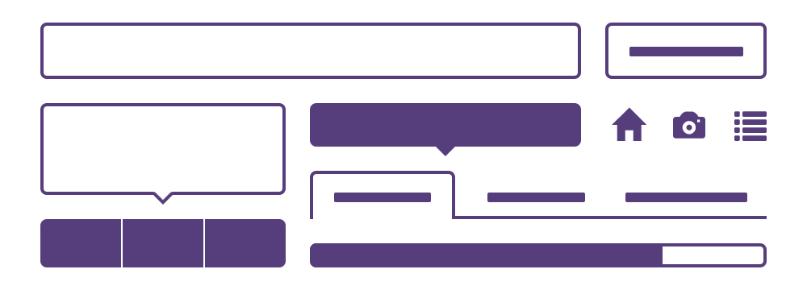
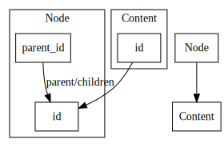

Standing on the Shoulders of Giants
The Kotti Web Application Framework
Andreas Kaiser
Owner & CTO of Xo7 GmbH | Willich, Germany (next to Düsseldorf)
This Talk
- What? (bird's eye perspective)
- Why? (reasons)
- What? (goals / features)
- How? (the giants)
- Examples! (code)
- Q&A (if we have time)
Why?
Yet another web framework?
Aren't there already dozens (hundreds?) out there?
Just pick one!

Features
- full featured CMS
- lots of add ons (varying quality)
- OFS (object file system)
- security (permissions, roles, groups)
- workflows
Can be a perfect choice when it fits your needs
but
does not fit all kinds of applications.
Often too many features out of the box
- multiple competing technologies
-
doesn't conform to "The Zen of Python"
-
“preferably only one obvious way to do it”
-
-
based on
- Zope2 (monolithic)
- Zope 3 (components)
-
“everything is a adapter or utility”
– Lennart Regebro
- complex (ZCA)
Features
- small core
- excellent documentation!
- pythonic
- low level
-
unopinionated
- persistence
- templating / forms
- authentication / authorization sources
-
“framework framework”
Conclusion
- only provides stuff we need
- doesn't come with unneeded ballast
-
no need to
“waste time fighting the framework's decisions”
- perfect foundation!
Make some choices!
- persistence
- traversal or URL dispatch
- templating & forms
- authentication & authorization sources
- probably the most advanced ORM for Python
- database agnostic
- has many nice, useful features
-
transactions can be bound to the lifecycle of a Pyramid request
through the use ofpyramid_tmandzope.sqlalchemy
The Node Class
-
adjacency list pattern
- parent
- children
- single root node => node tree
- dictionary protocol
Dictionary Protocol
from kotti.resources import Document
from kotti.resources import get_root
root = get_root()
root['about']
<Document 2 at /about>
root['my-document'] = Document(title='My Document', description='foo',
body='some HTML
')
Traversal
a = root['a'] = Document(title='A', description='Document A')
b = root['a']['b'] = Document(title='B', description='Document B')
c = root['a']['b']['c'] = Document(title='C', description='Document C')
| Object | URL |
|---|---|
| a | /a |
| b | /a/b |
| c | /a/b/c |
Polimorphic queries
from kotti.resources import get_root
from kotti.resources import Node
root = get_root()
print root.children:
print(type(c))
"<class 'kotti.resources.Document'>"
"<class 'kotti.resources.File'>"
print Node.query.filter(Node.title == 'My Document').one()
"<Document 5 at /my-document>"
Joined Table Inheritance
- has all the components for modern UIs
- responsive
- well known
- easy to customize

Colander
- define data schema
-
validate & deserialize
- HTML forms
- JSON
- XML
-
serialize Python structures to
- strings
- mappings
- lists
Deform
- render HTML forms from structures serialized by Colander
- outputs Bootstrap 3 forms (Deform 2)
Wiring it all together
Examples
Custom Content Type
from kotti.resources import Content from sqlalchemy import * class Document(Content):id = Column(Integer(), ForeignKey('contents.id'), primary_key=True)body = Column(UnicodeText()) mime_type = Column(String(30))type_info = Content.type_info.copy( name=u'Document', title=_(u'Document'), add_view=u'add_document', addable_to=[u'Document'])
Schema definition for validation and form creation
import colander
import deform
from kotti.views.edit.content import ContentSchema
class DocumentSchema(ContentSchema):
body = colander.SchemaNode(
colander.String(),
title=_(u'Body'),
widget=deform.widget.RichTextWidget(),
missing=u"")Add / edit forms
from kotti.resources import Document
from kotti.views.form import AddFormView
from kotti.views.form import EditFormView
from pyramid.view import view_config
@view_config(name=Document.type_info.add_view, permission='add',
renderer='kotti:templates/edit/node.pt')
class DocumentAddForm(AddFormView):
schema_factory = DocumentSchema
add = Document
item_type = _(u"Document")
@view_config(context=Document, name='edit', permission='edit',
renderer='kotti:templates/edit/node.pt')
class DocumentEditForm(EditFormView):
schema_factory = DocumentSchemaThank you!
Questions?
What
-
Python
- fun
- productive
-
Plone
- simple
- readable
- expressive
“Kotti is a high-level, pythonic web application framework based on Pyramid and SQLAlchemy.
It includes an extensible Content Management System called the Kotti CMS.”
Really? Yet another one?
Why?
A little bit of history…
Zope & Plone
- they do a lot of things right
- pioneers
but
lightweight pythonic
So let's build something new from scratch.
And this time we'll make everything right!
Giants?
- solid foundation
- unopinionated
- persistence
- templating
- ...
- framework framework
- Alembic
- zope.sqlalchemy / transaction
Features
- Persistence
- Security
- Security
Persistence
(almost) plain SQLAlchemy
Nodes
Persistence – Nodes / Traversal
Persistence – Content Types
- SQLAlchemy Declarative
- Joined Table Inheritance
Persistence – Custom Content Type
Security
- Users and Groups
- Permissions
- Roles
- Workflow
Security – Users and Groups
Security – Permissions
Security – Roles
global / localSecurity – Workflow
UI – Bootstrap 3
Forms – Colander and Deform
Point of View
Press ESC to enter the slide overview.
Hold down alt and click on any element to zoom in on it using zoom.js. Alt + click anywhere to zoom back out.
Fragments
Hit the next arrow...
... to step through ...
... a fragmented slide.
Fragment Styles
There's different types of fragments, like:
grow
shrink
fade-out
current-visible
highlight-red
highlight-blue
Transition Styles
You can select from different transitions, like:
None -
Fade -
Slide -
Convex -
Concave -
Zoom
Themes
reveal.js comes with a few themes built in:
Black (default) -
White -
League -
Sky -
Beige -
Simple
Serif -
Blood -
Night -
Moon -
Solarized
Slide Backgrounds
Set data-background="#dddddd" on a slide to change the background color. All CSS color formats are supported.
Image Backgrounds
<section data-background="image.png">Tiled Backgrounds
<section data-background="image.png" data-background-repeat="repeat" data-background-size="100px">Video Backgrounds
<section data-background-video="video.mp4,video.webm">... and GIFs!
Background Transitions
Different background transitions are available via the backgroundTransition option. This one's called "zoom".
Reveal.configure({ backgroundTransition: 'zoom' })Background Transitions
You can override background transitions per-slide.
<section data-background-transition="zoom">Pretty Code
function linkify( selector ) {
if( supports3DTransforms ) {
var nodes = document.querySelectorAll( selector );
for( var i = 0, len = nodes.length; i < len; i++ ) {
var node = nodes[i];
if( !node.className ) {
node.className += ' roll';
}
}
}
}
Code syntax highlighting courtesy of highlight.js.
Marvelous List
- No order here
- Or here
- Or here
- Or here
Fantastic Ordered List
- One is smaller than...
- Two is smaller than...
- Three!
Tabular Tables
| Item | Value | Quantity |
|---|---|---|
| Apples | $1 | 7 |
| Lemonade | $2 | 18 |
| Bread | $3 | 2 |
Clever Quotes
These guys come in two forms, inline:
“The nice thing about standards is that there are so many to choose from”
and block:
“For years there has been a theory that millions of monkeys typing at random on millions of typewriters would reproduce the entire works of Shakespeare. The Internet has proven this theory to be untrue.”
Intergalactic Interconnections
You can link between slides internally, like this.
Speaker View
There's a speaker view. It includes a timer, preview of the upcoming slide as well as your speaker notes.
Press the S key to try it out.
Export to PDF
Presentations can be exported to PDF, here's an example:
Global State
Set data-state="something" on a slide and "something"
will be added as a class to the document element when the slide is open. This lets you
apply broader style changes, like switching the page background.
State Events
Additionally custom events can be triggered on a per slide basis by binding to the data-state name.
Reveal.addEventListener( 'customevent', function() {
console.log( '"customevent" has fired' );
} );
Take a Moment
Press B or . on your keyboard to pause the presentation. This is helpful when you're on stage and want to take distracting slides off the screen.
Much more
- Right-to-left support
- Extensive JavaScript API
- Auto-progression
- Parallax backgrounds
- Custom keyboard bindings